Welcome to Coastal Hydrodynamics Lab. at KU
Better Understanding of Coastal Hydrodynamics: Towards Safer and Sustainable Coasts
Research Interests
The Coastal Hydrodynamics Lab (CHL) investigates the physics of complex flows driven by waves and currents along the coast, and develops technologies for predicting and preparing for coastal hazards. We build high-fidelity computer simulations that reproduce how tsunamis and storm surges originate and reach the shoreline, and integrate artificial intelligence to rapidly analyze large numbers of scenarios and enable near-real-time forecasting. Developing faster and more accurate simulation tools is at the core of what we do. Building on this foundation, we study a wide range of coastal phenomena — typhoon forecasting, shoreline and seabed morphological change, oil spill transport, and rip currents — while also assessing how climate change may reshape future coastal hazard risks. Our ultimate goal is to reduce disaster impacts, improve the design of coastal structures such as breakwaters, and contribute to a coastal environment where people and the ocean can coexist safely.
해안유체역학 연구실은 파도와 해류가 해안에서 만들어내는 복잡한 흐름의 원리를 밝히고, 이를 바탕으로 해안재해를 예측하고 대비하는 기술을 개발하는 곳입니다. 지진해일과 폭풍해일이 어떻게 발생하고 해안에 도달하는지를 컴퓨터 시뮬레이션으로 정밀하게 재현하며, 여기에 인공지능 기술을 결합해 수많은 시나리오를 빠르게 분석하고 실시간에 가까운 예측이 가능하도록 연구하고 있습니다. 더 빠르고 더 정확한 시뮬레이션 기술을 만드는 것이 연구실의 핵심 역량입니다. 이를 토대로 태풍 예측, 해안 지형 변화, 기름 유출 확산, 이안류 등 연안의 다양한 현상을 연구하고, 기후변화가 가져올 미래 해안재해의 위험도 평가하고 있습니다. 저희 연구는 재해를 줄이고, 방파제 같은 해안 구조물의 설계를 더 합리적으로 만들며, 궁극적으로 사람과 바다가 안전하게 공존하는 해안환경을 만드는 데 기여하고자 합니다.
Research Keywords: Coastal Hydrodynamics, Sediment Transport, Numerical Modelling(CFD), Tsunamis/Storm Surges, Turbulent Mixing in the Nearshore, Oil Spill Modelling
What's up in CHL
-
New Ph.D/MS students!
Coastal Hydrodynamics Lab. is seeking a new, motivated MS/Ph.D student who will work on research topics such as GPU-acceleration, AI technology for coastal hazards(storm surges/tsunamis), future ocean conditions. Please contact Dr.Son at sson(at)korea(dot)ac(dot)kr if you are interested. -
[Jul. 1-3, 2026] Prof. Son presented at the Port Expert Workshop for Korea-ASEAN Cooperation in Seoul
On July 1-3, 2026, Prof. Son attended and presented at the "Port Expert Workshop for the New Cooperation Project with the Republic of Korea," held at Shilla Stay Gwanghwamun in Seoul. Organized by Korea's Ministry of Oceans and Fisheries (MOF) and hosted by the Korea Ports and Harbours Association (KPHA), the workshop gathered port experts and officials from ASEAN member states to advance the development of climate-resilient safe-port guidelines. Prof. Son delivered a lecture titled "Methods and Technological Advances in Assessing Coastal Vulnerability to Climate Change," sharing the latest approaches to evaluating coastal vulnerability under a changing climate.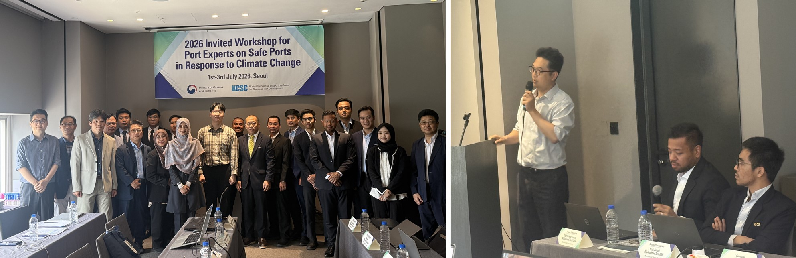
-
[May 31 - Jun. 4, 2026] Prof. Son attended the Geo-INQUIRE PTRA Workshop at GFZ Potsdam
Prof. Son participated in the international workshop "From Scenarios to Consequences: Probabilistic Tsunami Risk Analysis with Geo-INQUIRE Services," held at the GFZ Helmholtz Centre for Geosciences in Potsdam, Germany from May 31 to June 4, 2026. The hands-on workshop guided participants from probabilistic tsunami hazard analysis (PTHA) through exposure, fragility, and consequence modelling toward a full probabilistic tsunami risk analysis (PTRA), offering Prof. Son a valuable opportunity to deepen his understanding of PTRA as a step beyond PTHA. Our team (a.k.a., missing ones!) presented short-term work on comparative tsunami fatality modelling using gridded and building-level exposure data. Beyond the science, it was very charming the calm, idyllic research setting of GFZ on Telegrafenberg — a historic hill also home to the Einstein Tower — which made the visit all the more memorable.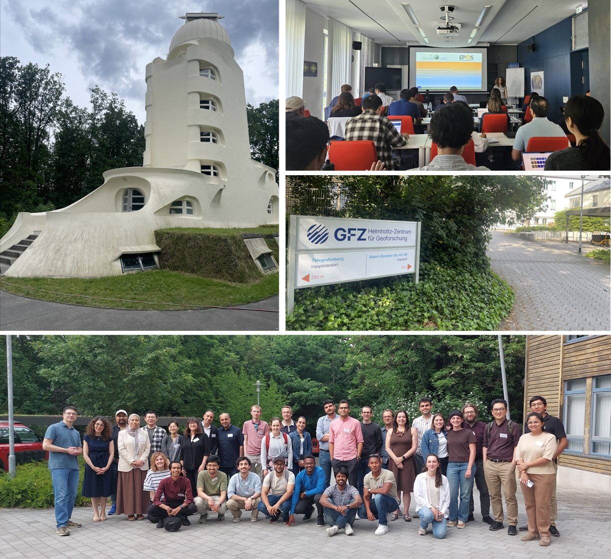
-
[May 17-22, 2026] CHL attended the 39th ICCE 2026 in Galveston, Texas
CHL took part in the 39th International Conference on Coastal Engineering (ICCE 2026), held on May 17-22, 2026 in Galveston, Texas, USA. This year, Prof. Son gave a talk on the storm surge modelling using satellite-derived data and also served as a convener. Dr. Kim presented on a deep learning SWAN emulator and Jewon Kang presented orally GPU-based tsunami modeling. Mijin also shared her research in the poster session. During the conference, we were delighted to reconnect with Prof. Lynett's research group at the University of Southern California (USC), exchanging ideas on our latest work and future collaborations.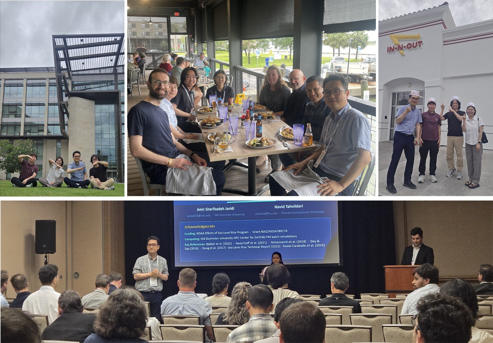
-
[May 3-8, 2026] CHL attended EGU General Assembly 2026 in Vienna, Austria
CHL members attended the European Geosciences Union (EGU) General Assembly 2026, held on May 3-8, 2026 at the Austria Center Vienna in Vienna, Austria. Prof. Son gave an oral presentation on "Improving Tropical Cyclone Wind and Pressure Field Reconstruction Using GK-2A Atmospheric Motion Vectors and Machine Learning," and Jewon Kang delivered an oral talk titled "A GPU-Accelerated Framework for Basin-Scale Tsunami Propagation in Early Warning Applications." Seungtaek Im presented a poster on "Probabilistic Tsunami Hazard Assessment and Deaggregation for the Eastern Coast of Korea." It was a wonderful opportunity to share our latest research on tsunami hazards, early warning, and AI-based cyclone modelling with the global geoscience community.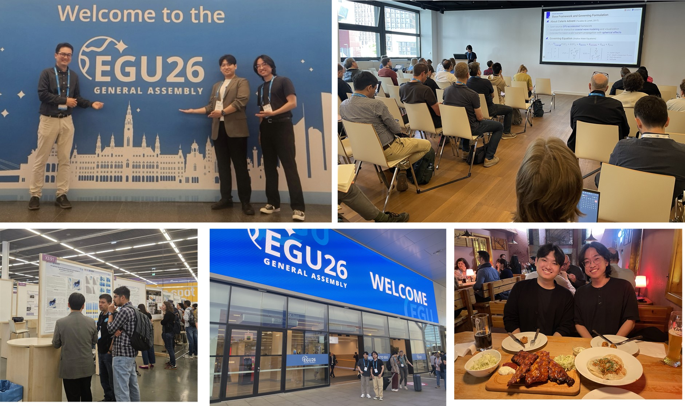
-
[Dec. 29, 2025] CHL Year-End Party & Reunion
On December 29, 2025, CHL gathered for a year-end party and reunion, bringing together current members and alumni to close out the year together. It was a warm and joyful occasion to look back on the past year's accomplishments, reconnect with old friends, and share stories over good food and conversation. Reunions like this remind us how much the CHL family has grown over the years, and we look forward to carrying this spirit into the new year. Happy New Year to all!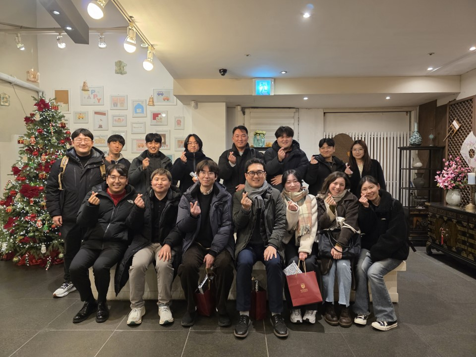
-
[Dec. 3-4, 2025] Prof. Son gave a talk at the UN ESCAP Capacity Building Workshop on Small Ports in Bangkok
On December 3-4, 2025, Prof. Son participated in the "Capacity Building Workshop on Port Digitalization and Resilience of Small Ports in the Asia-Pacific Region," held at the UN Conference Centre (UNCC) in Bangkok, Thailand. In the workshop organized by UN ESCAP with the support of the Korea's Ministry of Oceans and Fisheries, Prof. Son delivered a presentation titled "Assessment Methods and Technological Trends for Evaluating Coastal Vulnerability to Climate Change," sharing insights on climate-resilient port infrastructure with maritime officials and experts from across the Asia-Pacific region. See details here.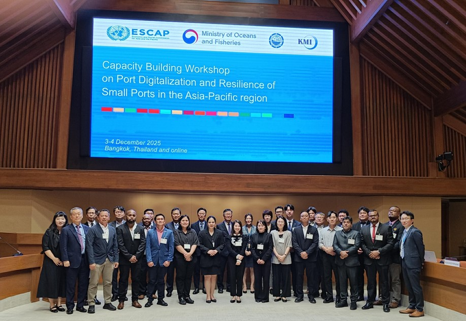
-
[Nov. 19-21, 2025] Prof. Son visited the University of Tokyo for an international coastal research exchange
From November 19 to 21, 2025, Prof. Son visited the University of Tokyo to take part in the International Collaborative Program for Sustainable Coastal Monitoring Technologies, a KOFST-funded program coordinated by the Korea Water Resources Association (KWRA). The visit centered on the Coastal Engineering Laboratory of Prof. Takenori Shimozono at the University of Tokyo, where the participants held discussions on international joint research directions and toured field sites including a deep-underground tunnel and the Port of Yokohama. Joining a Korean delegation of coastal and water engineering researchers from several universities, Prof. Son shared ideas on UAV- and multi-sensor-based coastal monitoring and helped strengthen Korea-Japan research collaboration.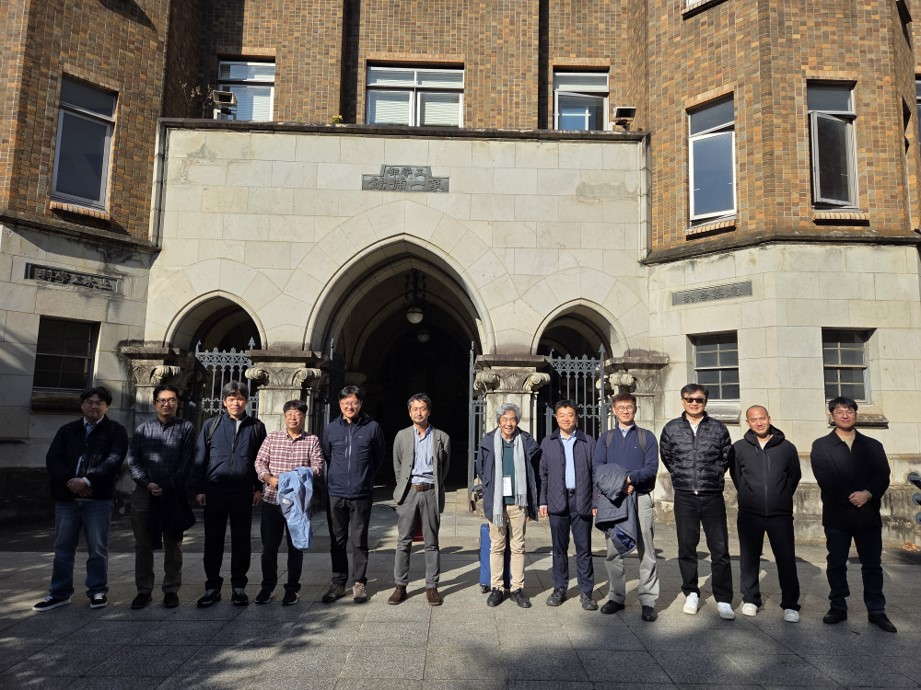
-
[Nov. 5-7, 2025] CHL participated in APAC 2025
CHL took part in the Asian and Pacific Coastal Engineering Conference (APAC) 2025, held on November 5-7, 2025. Prof. Son contributed as a member of the Local Organizing Committee and served as chair of the "Nearshore Currents and Sediment" session. Dr. Xiaojuan Qian presented her research titled "Impact of Typhoon Rainfall from Different Landfall Paths on Coastal Compound Flooding," sharing the lab's work on typhoon-driven compound flood dynamics with the coastal engineering community across the Asia-Pacific region.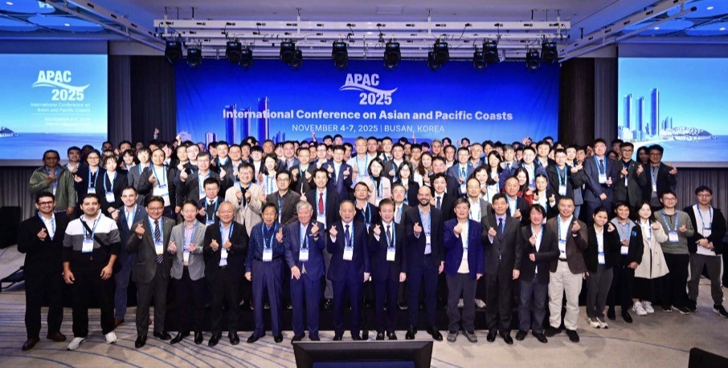
-
[Oct. 20-25, 2025] Prof. Son attended and presented at the 42nd Korea-China Academic Conference in Taipei, Taiwan
At the invitation of Cheongju University, Prof. Son attended the 42nd Korea-China (Taiwan) Academic Conference, held on October 20-25, 2025 at the GIS TAIPEI TECH Convention Center in Taipei, Taiwan, and organized by the Sino-Korean Culture Foundation of Taiwan. Convened under the theme "Low Birth Rate Trends and Rural Development," the conference fostered academic and cultural exchange between Korea and Taiwan. Prof. Son delivered a presentation on strategies for addressing population decline and low birth rates in coastal rural regions.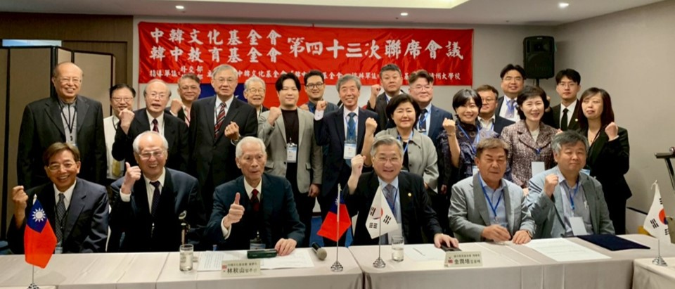
-
[Sep. 22-26, 2025] CHL attended the Wave Workshop in Santander, Spain
Prof. Son and Dr. Jinyoung Kim attended the 4th International Workshop on Waves, Storm Surges and Coastal Hazards (incorporating the 18th International Waves Workshop), held on September 22-26, 2025 in Santander, Spain. Prof. Son gave a talk titled "Assessing the Impact of Tropical Cyclone Rainfall Motion on Coastal Compound Flooding," while Dr. Kim presented "Hurricane-Induced Wave Forcing and Associated Wetland Erosion Mechanisms in a Shallow Bay." The workshop brought together the global wave and storm surge modelling community, offering a great opportunity to share our latest research and exchange ideas with leading experts in the field.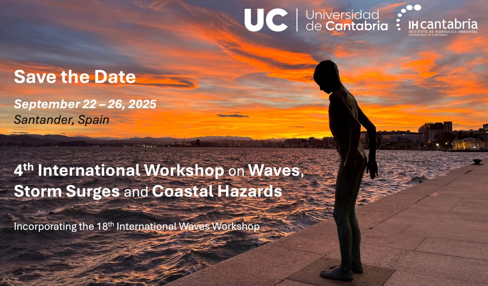
-
[Aug. 25, 2025] Congratulations to CHL's graduating students, Vera and Xiaojuan!
On August 25, 2025, two of our CHL students graduated. Vera, an M.S. student supported by the Global Korea Scholarship (GKS), completed her research on "Hybrid AI and Physical Modeling for Storm-induced Debris Transport," while Xiaojuan, a Ph.D. student, carried out her work on "Typhoon Dynamics and Compound Flooding in Coastal Areas." Vera will be joining Hyundai Engineering & Construction Co. as an engineer, and Xiaojuan will begin her career from Sep. 2026 as an Assistant Professor at Zhejiang Ocean University. Congratulations to both on this wonderful achievement, and best wishes for the exciting journeys ahead!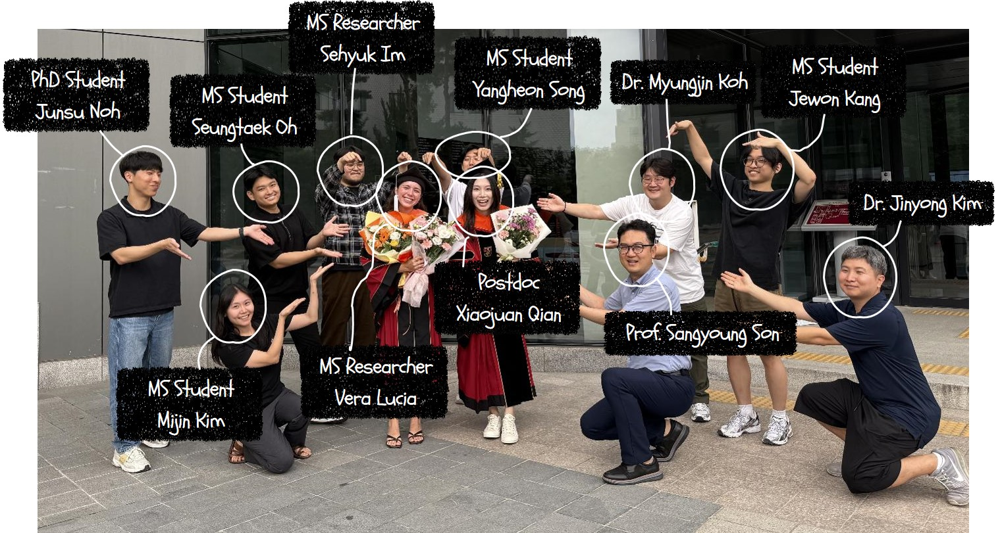
-
[Aug. 22, 2025] Joint Research Workshop with PKNU Coastal & Ocean Engineering Lab
On August 22, 2025, CHL held a joint research workshop at Pukyong National University (PKNU) together with the Coastal and Ocean Engineering Laboratory of PKNU, centered on our jointly conducted KMA-funded project on marine hazardous weather. KU CHL and the PKNU lab each presented their respective research topics, exchanging ideas and strengthening ties between the two groups. Beyond the academic sessions, we enjoyed a memorable time deepening our friendship — the yacht cruise passing beneath the Gwangan Bridge was a particular highlight of the day.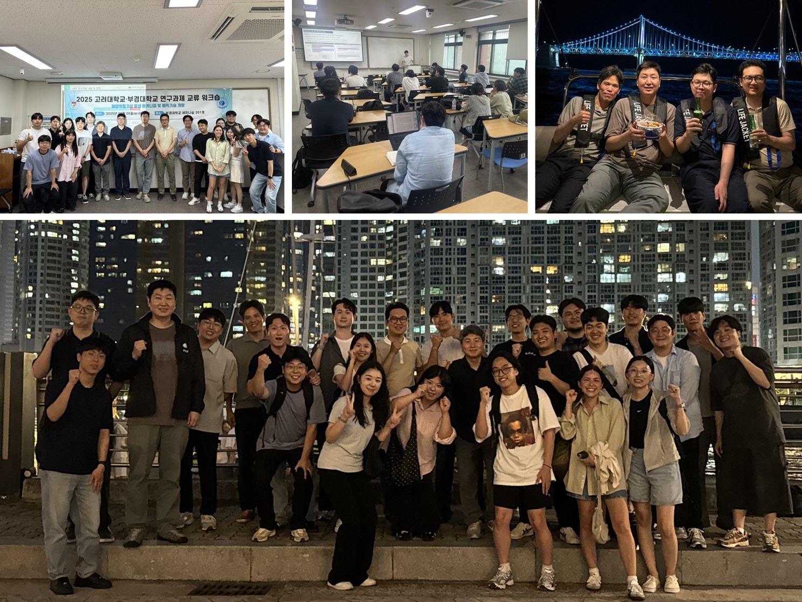
-
[Jul. 9-11, 2025] Prof. Son attended the Workshop on Safe Ports in Response to Climate Change in Seoul
From July 9 to 11, 2025, the "Workshop on Safe Ports in Response to Climate Change" was held in Seoul organized by the Ministry of Oceans and Fisheries (MOF) and the Korea Port Association. The workshop brought together maritime and port officials from the ASEAN Secretariat and eleven ASEAN member states to share insights, strategies, and best practices for enhancing the safety and resilience of port infrastructure against climate-related hazard. Prof. Son delivered an expert lecture titled "Increasing Risk of Tropical Cyclones in Coastal Areas," and joined the discussions on national priorities and the development of the climate-adaptation safe-port guidelines. The event marked an important step in the ongoing Korea-ASEAN cooperation initiated under the ASEAN Maritime Transport Working Group (MTWG).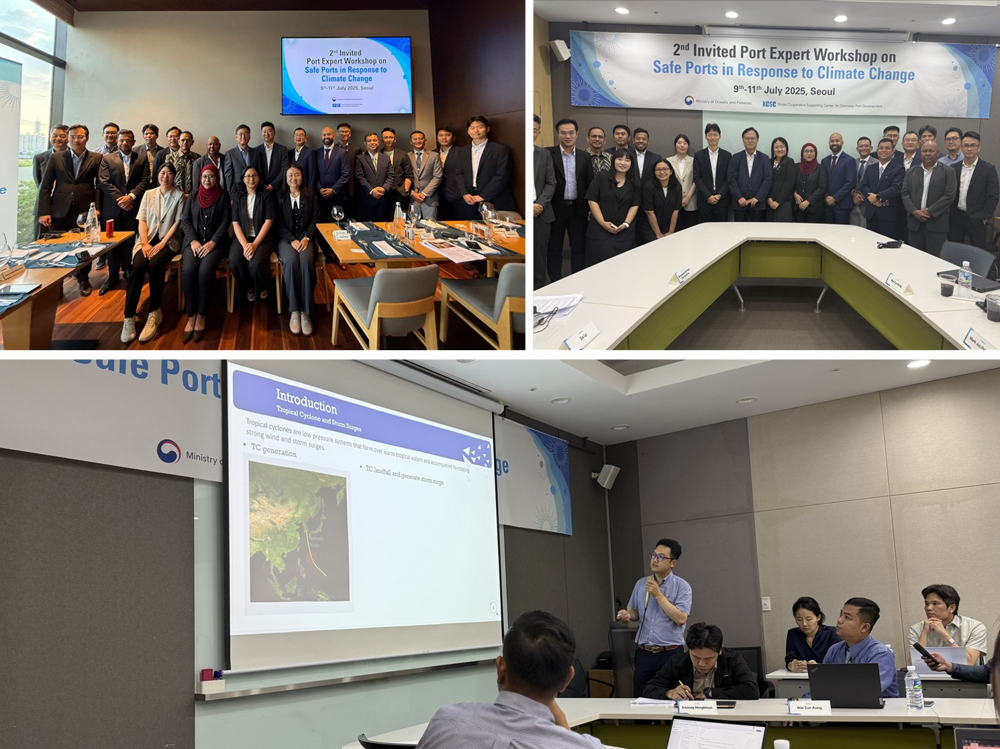
-
[May 21-23, 2025] CHL attended the 2025 KWRA Annual Conference in Yeosu
Some of CHL members participated in the 2025 Korea Water Resources Association (KWRA) Annual Conference, held on May 21-23, 2025 at the Yeosu EXPO Convention Center where Yangheon gave a talk on high-fidelity numerical modelling of explosive submarine flows. Dr. Jinyoung Kim presented about ocean wave emulator highlighting the lab's advances in AI-based surrogate modelling for wave predictione. It was a valuable opportunity to exchange ideas with the broader water resources research community and enjoy the coastal city of Yeosu.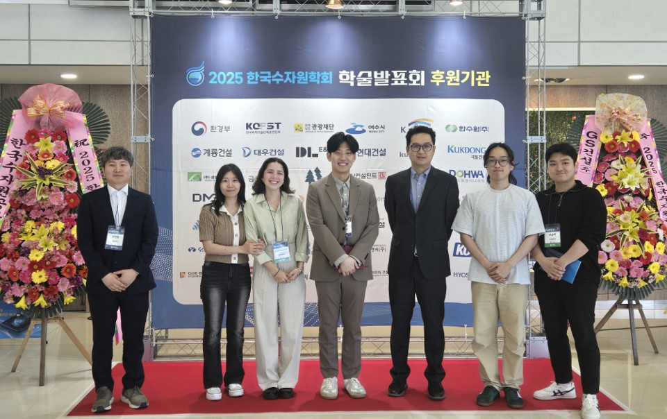
-
[May 7-8, 2025] Prof. Son attended and presented at the 48th ASEAN MTWG Meeting in Brunei
Prof. Son participated in the 48th ASEAN Maritime Transport Working Group (MTWG) Meeting, held on May 7-8, 2025 in Bandar Seri Begawan, Brunei. As part of the Korean delegation organized around the Ministry of Oceans and Fisheries (MOF), Prof. Son shared the progress and policy directions of ongoing cooperation projects. The initiative drew strong interest from ASEAN member states, laying practical groundwork for future coastal and port resilience cooperation across the region.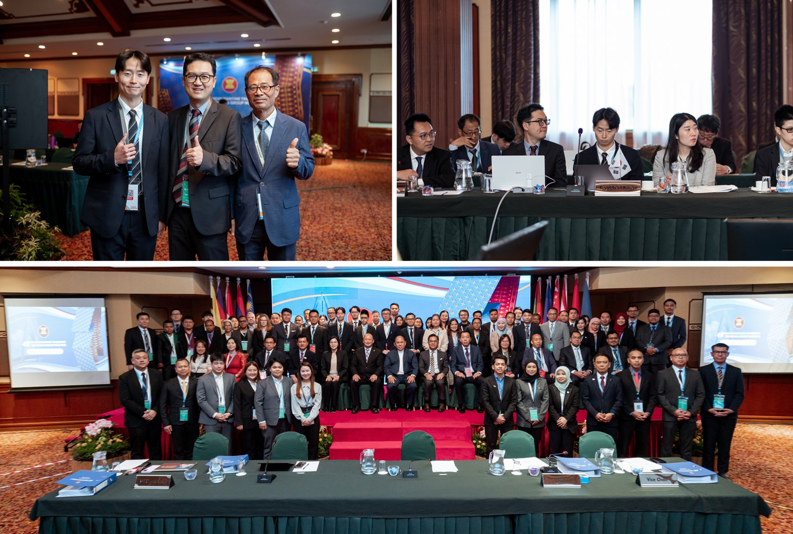
-
[Mar. 13, 2025] Prof. Figlus, Prof. Brody and Dr. Lee at Texas A&M Univ. visited CHL
We were honored to host Prof. Jens Figlus, Prof. Samuel Brody and Dr. Yoonjeong Lee from Texas A&M University on March 13, 2025, for an exciting and productive day of research discussions and collaboration-building with CHL. During their visit, Prof. Figlus delivered a captivating talk titled "Coastal Engineering for More Resilient Infrastructure: The Promise of Nature-Based Solutions." His presentation highlighted innovative approaches to coastal resilience, focusing on integrating natural and engineered systems to create sustainable, adaptive infrastructure in the face of growing coastal hazards. The visit also provided an excellent opportunity for in-depth conversations on potential collaborative research projects between Texas A&M University and CHL.
-
[Oct. 17, 2024] Prof. Son delivered invited virtual lecture at Universitas Hasanuddin
On October 17, 2024, Prof. Son delivered a virtual guest lecture hosted by the Department of Geophysics at the Faculty of Mathematics and Natural Sciences, Universitas Hasanuddin, Indonesia. His lecture, titled "Shallow Flow Modelling Based on Perturbation Theory: Past, Present, and Future," provided deep insights into the evolving field of fluid dynamics and oceanography. -
[Oct. 7, 2024] Prof. Kuang-An Chang from Texas A&M University visited CHL
We were delighted to host Prof. Kuang-An Chang at Texas A&M University on October 7, 2024. Prof. Chang delivered an engaging talk titled "Application of Image Methods for Wave-Structure Interaction and Near-Field Remote Sensing in a Wave Environment," sharing insights into image-based measurement techniques for wave-structure interaction and near-field remote sensing. Following the seminar, Prof. Son guided him on a tour around the Korea University campus, and he was captivated by its beauty. It was a wonderful day of research exchange and warm hospitality.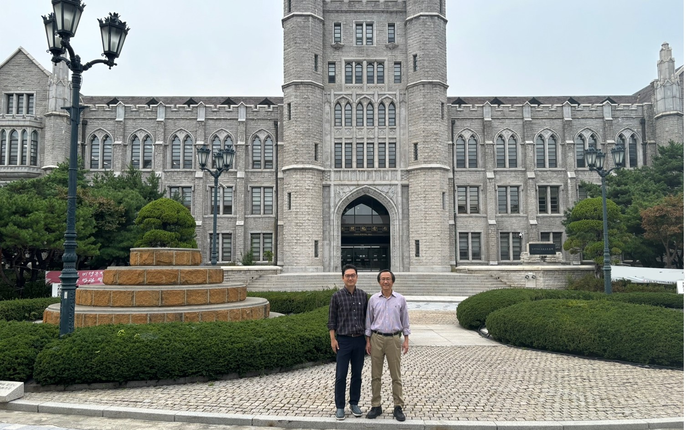
-
[Jul. 15-16, 2024] Summer Research Trip to Jungseon
We departed to Jungseon province for a two-day summer research trip. Especially, Prof. Na from the Kumho Institute of Technology, a former CHL post-doc, joined our trip with his undergraduate interns. This trip offered a perfect blend of field experiences and relaxation, creating an enriching and enjoyable atmosphere. A delightful BBQ, sharing laughter and stories late into the night, added another chapter of our joyful memories.
[Sep. 8-14, 2024] CHL Participates in ICCE 2024 in Rome, Italy
The CHL team, including Prof. Son, Junsu, and Jihyun, attended the ICCE 2024 conference held in Rome, Italy. Each of us delivered engaging talks on the topic of coastal disasters, sharing insights and discussing innovative approaches with the global research community. Beyond the academic exchange, we were captivated by the timeless charm and romantic beauty of Rome, making this conference experience truly unforgettable.
[Jul. 9-11, 2024] Prof. Son visited UTM in Malaysia
Prof. Son and other three Korean experts in climate change and hydraulic engineering visited Universiti Teknologi Malaysia(UTM) for attending International Symposium on Hydro-Climate , co-organized by BK21 FOUR of Korea University and Centre for River and Coastal Engineering in UTM. We presented their research, sharing the latest developments in climate and hydraulic engineering and exchanging professional knowledge. Prof. Sangyoung Son delivered a presentation titled “Unveiling the Role of Cyclone Movement in Storm Surge Dynamics”, which focused on storm surges. He shared expertise on the development of integrated flood models related to climate change, addressing one of the significant challenges in construction.[Dec. 11-15, 2023] CHL attended AGU Fall Meeting 2023 at San Francisco, US
CHL members (Dr. Hwang, Junsu and Sehyuk) attended AGU Fall Meeting 2023 held at San Francisco, US. Sehyuk, a master student gave a talk on his topic of storm surge modelling and Sooncheol and Junsu presented their works in the poster session. They've really enjoyed memorable time in San Francisco Bay area.
[Agu. 24-25, 2023] Summer retreat to Jungseon/Samcheok
CHL headed for Samcheok and Jungseon province to have a 2-day summer break. Our itinerary included exploring the Tsunami Prevention Safety Tower and the beach area in Samcheok. This allowed us to immerse ourselves in both field experiences and relaxation. As the day turned to night, we found comfort in a cozy cabin where we enjoyed a delightful BBQ evening. This excursion provided yet another unforgettable memory, filled with joyful moments and a lot of fun!
[Feb. 22-23, 2023] Winter retreat to Naerincheon
CHL had a retreat to Naerincheon, the upper reaches of the Han River during 2023 winter break. Along the way, we stopped at several dams to take in the scenery. During the retreat, lab members participated in a variety of activities, including seminars, hiking along the Birch Forest, relaxing in the Naerincheon trail, and enjoying a barbecue at night. We had a great time, and it was the perfect way to recharge before the upcoming spring semester.
[Dec. 4-9, 2022] CHL attended ICCE 2022 at Sydney
CHL members (Prof. Son, Sooncheol, Xiaojuan and Asrini) attended 37th International Conference on Coastal Engineering (ICCE) 2022 held at Sydney, Austraila. Soonchel and Xiaojuan gave a talk on their research output and Asrini presented her research in the poster session. We've mingled with other renowned experts over the interesting topics, and enjoyed the beauty of waterfront area at Sydney.
[Nov. 30, 2022] Congrats Dr. Hwang! The first Ph.D alumnus of CHL.
Soonchel has successfully defended his dissertation entitled "Immersive and Interactive Multi-physics Modeling of Coastal Hazards" on 30. Nov. 2022. His research highly focused on the emerging technology in the wave modelling. Congrats Dr. Hwang for your success in Ph.D journey and wish the best for your future career as a professional.
[Oct. 6, 2022] Field trip to Incheon New Port Construction!
As a part of UG class outreach (ACEE348 Coastal Diaster Modelling), UG students and CHL members have visited the construction site of Incheon New Port. The project is 4-year long work aiming at the seawall construction composed of cassion-type seawall. It was not only a great opportunity to feel directly the giant cassion and its manufacturing process, but also a sort of refreshment.
KU Hydro-Engineering Catalogue available !
KU Hydro-Engineering Catalogue is now available for downloading. It is offered in Korean as of now, and English version will be provided soon. The catalogue contains all the informations on KU Hydro-Engineering such as what we are doing, how you can earn the degree, who have been a member and etc. We hope that this information help you get familiar with us. Click the thumbnail below to download it!
Special Issue on "Advances in Nearshore Hydrodynamics Research"
Journal of Marine Science and Engineering [IF 2.033] had published a Special Issue focusing on Advances in Nearshore Hydrodynamics Research. This issue was first proposed and handled by Dr. Son and totally 5 papers were published successfully.
[Oct. 11, 2019] International Workshop on Advanced Technology in Coastal Engineering
We had successfully hold "International Workshop on Advanced Technology in Coastal Engineering" on Oct. 11, 2019 at Korea University. Prof. Patrick Lynett( Univ. of Southern California), Dr. Marcel van Gent(
Univ. of Southern California), Dr. Marcel van Gent( Deltares), Prof. Tso-Ren Wu(
Deltares), Prof. Tso-Ren Wu( National Central University),
Prof. Sungwon Shin(
National Central University),
Prof. Sungwon Shin( Hanyang Univ.) and Dr. Byoungjoon Na( Korea Univ.) gave talks on interesting front-line topics such as tsunami hazards, climate change adaptions, non-Newtonian flow modelling, wave breaking in the workshop.
Thanks all the participants!
Hanyang Univ.) and Dr. Byoungjoon Na( Korea Univ.) gave talks on interesting front-line topics such as tsunami hazards, climate change adaptions, non-Newtonian flow modelling, wave breaking in the workshop.
Thanks all the participants!

Teaching Schedule (Past and Current)
2021S : ACEE 228 – Fluid Mechanics and Lab., ACE 635 – Computational Hydraulics
17F : ACE 832 – Tidal and Coastline Hydraulics
16S, 18S : ACE 635 – Computational Hydraulics
17S, 19F : ACE 564 – Hydrodynamics
15F, 16F, 17F, 18F, 19F, 20F : ACEE 338 – Coastal and Harbor Engineering
16S, 17S, 18S, 20S : ACEE 228 – Fluid Mechanics and Lab.
15F, 16F, 17F, 18F, 19F, 20F : EGRN 151 – Computer Language and Lab.
19S : on leave